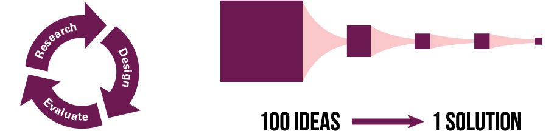
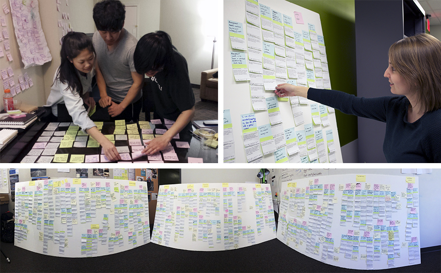
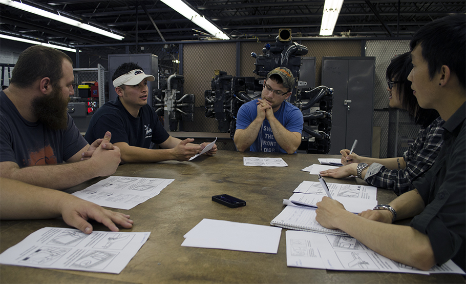

Sora: Streamlining Communication on the Boeing 737 Production Line
The Master's program in Human-Computer Interaction (MHCI) at Carnegie Mellon University provided our capstone project team an opportunity to work with technical fellow industry sponsors at The Boeing Company to implement an iterative research and design process to streamline communication on the 737 line at the Boeing Renton factory.
- Project Date: Jan 2014 - Aug 2014
- Affiliations: Carnegie Mellon University and The Boeing Company
- Funding: The Boeing Company
- Collaborators: Scott Chiu, Emily Danchik, Chris Wang, and Fonda Chen
Background
Boeing's Renton Factory is the largest and most efficient aircraft manufacturing facility in the world. In a building the size of 2.5 city blocks (or 1.1 million sq ft), the factory produces Boeing 737s at a rate of 52 airplanes per month. Employees at this factory take great pride in their work, which requires tremendous care and craftsmanship. However, miscommunication and gaps in information often prevent employees from doing quality work.
Goal
The goal of this project is to apply the human-centered design process to build empathy around user needs and design a solution that can bridge communication gaps in order to improve efficiency and safety in the workplace.
Methods
- Semi-structured interviews (contextual inquiry) with 60 employees
- Diary study
- Affinity diagram, mind-mapping, flow modeling
- Visioning
- Speed dating
- Experience prototyping
{kind=link}

As research lead in a team of five students, I devised and implemented qualitative research methods such as speed dating, diary study, focus groups, and experience prototyping studies with factory employees. In addition, I calculated the business value of our proposed solution. As a team, we interviewed over 60 employees in the factory during three separate field trips to Seattle. We synthesized our data via affinity diagramming, mind-mapping and flow modelling, then generated over 100 design concepts through visioning exercises. We plotted these ideas on a feasibility matrix and conducted speed dating to converge on a single design idea.
{kind=link}

To analyze huge amounts of qualitative data (~850 notes), we organized similar sets of ideas into clusters via affinity diagramming. This bottom-up approach allowed us to distill key themes or insights in an organic way.
{kind=link}

Using a storyboard based speed-dating exercise, we were able to rapidly elicit participants' reactions to 11 use case scenarios (showcasing each design conept) without actually building a functional prototype.
Key Findings
Final deliverables include a high-fidelity prototype, concept video, research findings report, design process report, and website. Due to the proprietary nature of the project, I cannot disclose research findings nor final deliverables online. However, I will be more than happy to discuss this project in person.
{kind=link}
Internal Reports
| Echo: Fostering Connection at the Boeing Renton Factory. Matthew K. Hong, Fonda Chen, Scott Chiu, Emily Danchik, and Chris Wang. Summer Design Report 2014 (Boeing-CMU Capstone Project), Pittsburgh, PA, USA, 2014. |
|
| Contextualizing Communication at the Boeing Renton Factory. Matthew K. Hong, Fonda Chen, Scott Chiu, Emily Danchik, and Chris Wang. Spring Research Report 2014 (Boeing-CMU Capstone Project), Pittsburgh, PA, USA, 2014. |